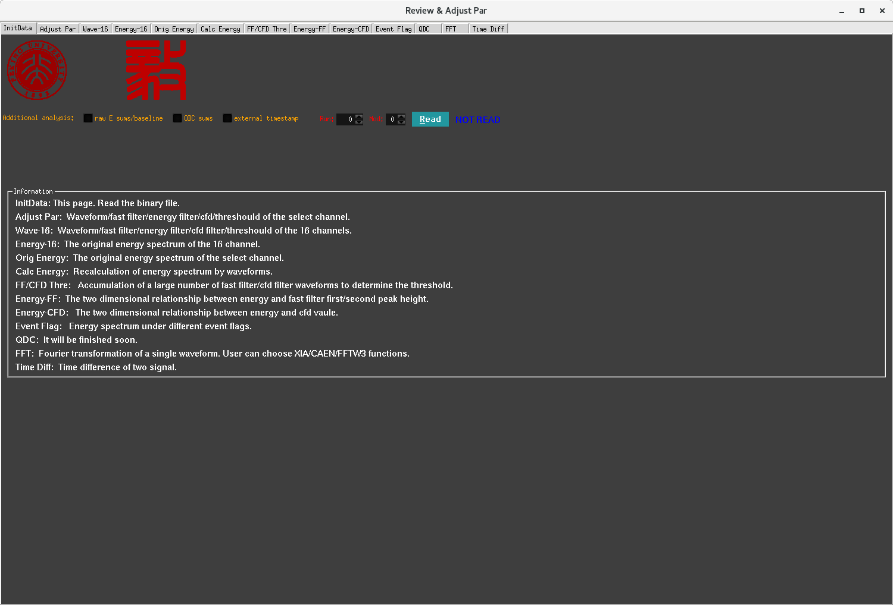
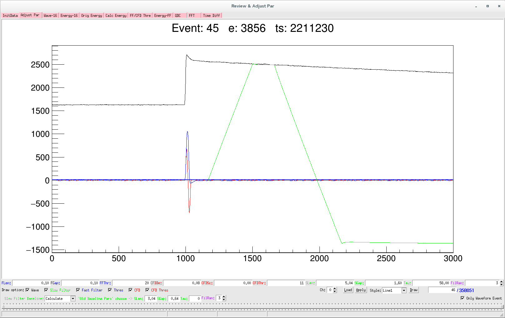
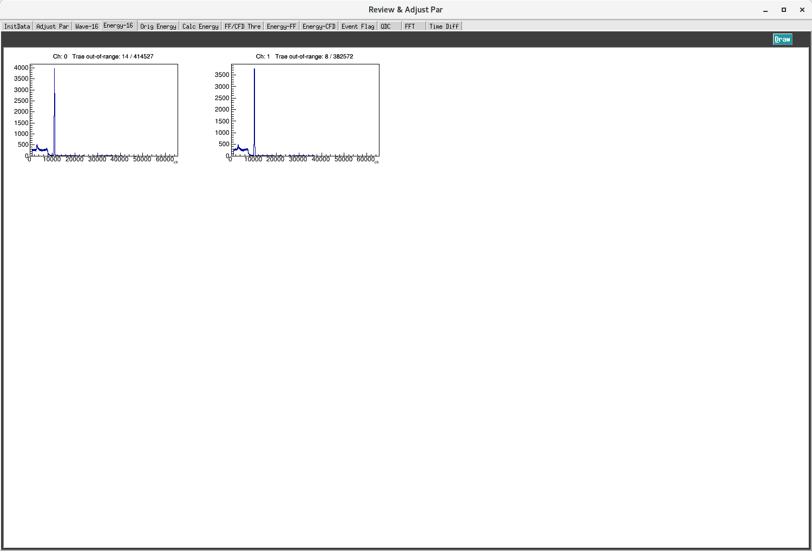
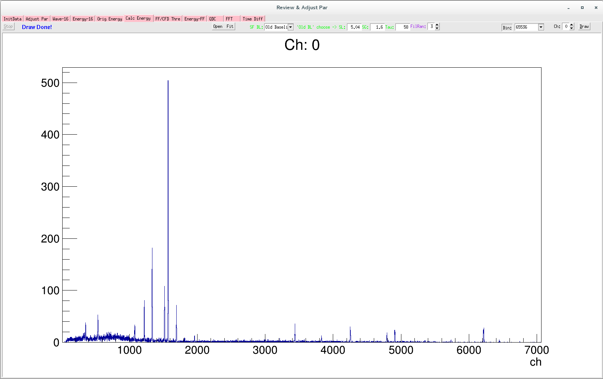
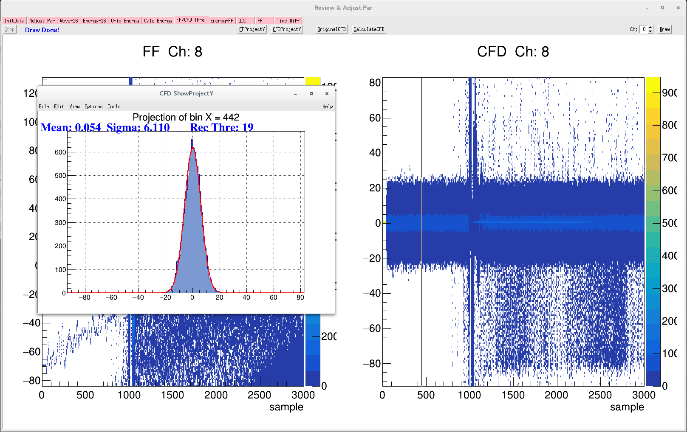
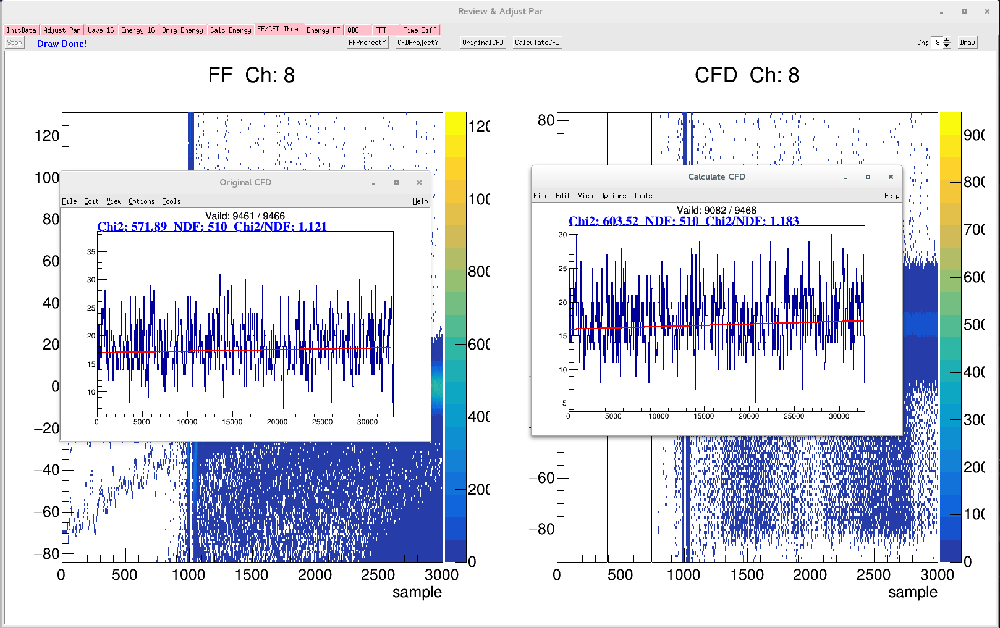
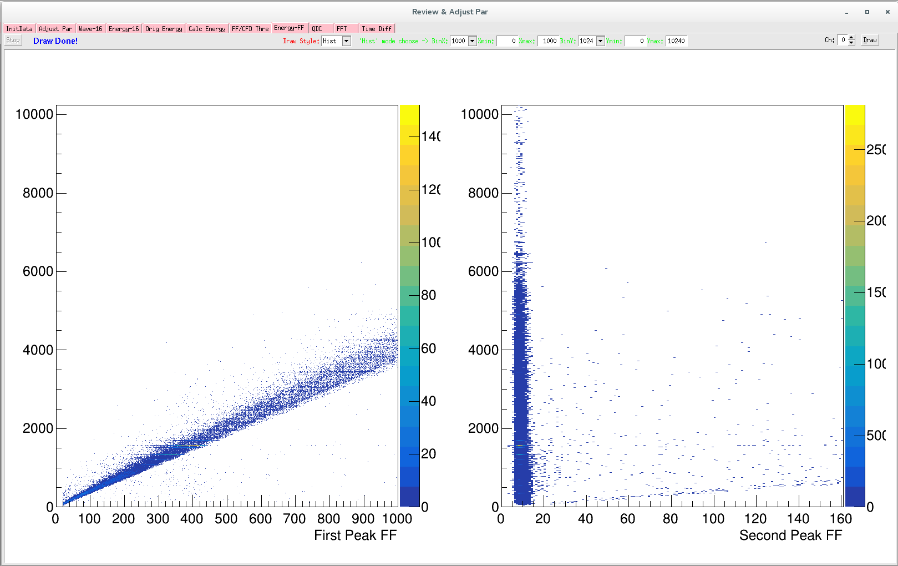
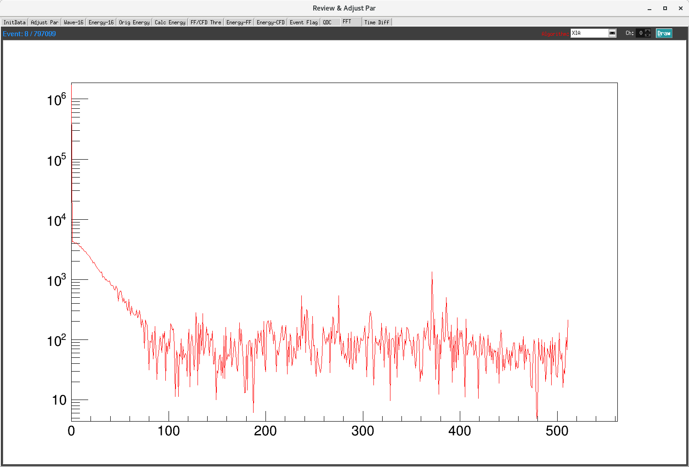

Offiline¶
本下拉栏中为离线参数优化调节。
InitData¶
Run 选择要读取的文件运行编号，Mod 选择要读取第几个采集卡，按钮 Read 将文件主要信息(道址、能量、波形位置等)载入内存。
Additional analysis: 三个选项中，选择表示读取该文件数据到内存中时包括该信息。只有读取了该数据，才能启用一些分析方法。但是前提是数据采集时候需要记录该信息。
InitData: This page. Read the binary file.
Adjust Par: Waveform/fast filter/energy filter/cfd/threshould of the select channel.
Wave-16: Waveform/fast filter/energy filter/cfd filter/threshould of the 16 channels.
Energy-16: The original energy spectrum of the 16 channel..
Orig Energy: The original energy spectrum of the select channel.
Calc Energy: Recalculation of energy spectrum by waveforms.
FF/CFD Thre: Accumulation of a large number of fast filter/cfd filter waveforms to determine the threshold.
Energy-FF: The two dimensional relationship between energy and fast filter first/second peak height.
QDC: It will be finished soon.
FFT: Fourier transformation of a single waveform. User can choose XIA/CAEN/FFTW3 functions.
Time Diff: Time difference of two signal.
Adjust Par¶

要通过采集的波形离线计算fast filter、slow filter cfd 曲线，对采集的波形有以下要求。如上图中，计算的能量是算法的能量与算法的基线的差，要得到正确的梯形，那么前提是前面有足够长的点来计算基线。
In the figure, EFRT stands for Energy Filter Rise Time and EFFT stands for Energy Filter Flat Top.
To compute energy filter response offline, the ideal settings are:
Total trance length > 2 x ( 2 x EFRT + EFFT)
Pre-trigger trace (Trace-delay) length > ( 3 x EFRT + EFFT )
当然，这只是计算梯形的一个方法，如果我们记录了每个事件的能量梯形的基线，并且采用pre-trigger部分点的平均值作为波形左侧的无限延伸，那么就不受 Pre-trigger trace length > ( 3 x EFRT + EFFT ) 条件的限制了。下面的页面中，当采用 Old Baseline 方法来计算能量梯形时，有个前提是 pre-trigger trace length 至少需要有 200 个点，因为波形左侧延伸采用前 200 个点来平均。
当采集的波形 pre-trigger trace length > 3 x EFRT + EFFT 时，pre-trigger trace 提供足够多的点来计算基线，SF BL 算法可选择 Calculate，否则需要选择 Old Baseline 算法。选择Old Baseline 算法的前提时记录数据的时候， 选择开启记录 梯形的baseline，并且 InitData 页面的 raw E sums/baseline 选项开启。当选择 Old Baseline 算法时，之后的四个选项参数生效，该四个参数为该数据采集时候所用的能量梯形的参数。
上图中绿色曲线为典型的不满足 pre-trigger trace length > 3 x EFRT + EFFT 时，采用的 Calculate 算法造成的结果。图中显示 pre-trigger trace length 为 10 us，EFRT 为 5.04 us，EFFT 为 1.60 us。
此时，应该采用下图所示的 Old Baseline 算法。

用户可选择查看波形的通道，按钮 Load 可读取并显示当前的参数设置情况，当修改以上的参数时候，需要按 Apply 按钮使之生效。按钮 Draw 用来显示下一个该通道的事件波形。
用户可选择同时显示 Wave / Slow Filter/ Fast filter / Thres / CFD / CFD Thres 中的多个波形。或者选择曲线的绘画样式。

上图展示了显示 fast filter、Thres、CFD、CFD Thres 四个波形，图样采用点显示方式。最低端的水平条两端可以拖动，用户可拉动来控制波形横坐标的显示范围，如图中显示800 - 1300 的点。该情况下，点击 Draw 按钮，将会保持该指定的坐标范围。
Wave-16¶

该页面用于同时查看16通道的原始波形、filter 波形，阈值等。用户可选择同时显示 Wave / Slow Filter/ Fast filter / Thres / CFD / CFD Thres 中的多个波形。
用户可通过该页面，快速查看该采集卡所有通道的波形是否正常，参数设置是否合理。点击按钮 Draw 一次，则显示所有通道下一个波形。
需要注意的一点，本页面的 Slow Filter 波形需要在采集的波形 pre-trigger trace 长度大于 3 x EFRT + EFFT 时才是正确的。
Energy-16¶
该界面用于同时查看 16 通道的一维能谱。点击右上角的按钮 Draw 即可。
Orig Energy¶

该页面用来快速查看某通道的能谱。用户选择能谱的分 Bin 数，该数值表示将 0 - 65536 道分成多少份。选择查看通道。然后按 Draw 按钮即可。

左上角的 Open Fit 按钮用来快速高斯拟合看能量分辨。点击按钮，开启拟合模式，再次点击按钮则关闭该功能。将鼠标移动到直方图的蓝线上，鼠标十字将会变成三角箭头。三角箭头的鼠标点击直方图中的两个位置，两点所在区间即为拟合区间，则可查看能量分辨。
Calc Energy¶
该页面利用采集的波形重新计算能量。同 Adjust Par 页面一样，SF BL 算法可选择Calculate算法或者 Old Baseline 算法。
计算能量采用的fast filter、energy filter参数采用采集卡的设置参数，用户需要选择能量 0-65536 分成多少个 bin，可选择 1024/2048/4096/8192/16384/32768/65536，选择计算的通道，然后按按钮 Draw即开始计算，左上角将会显示计算的进度，也可以按按钮 Stop 提前终止计算。当计算终止时，画板上将显示能谱。
FF/CFD Thre¶

该界面用于 fast filter波形、cfd filter波形的累加。用户选择查看通道，然后按 Draw 按钮则开始进入计算，左上角可时时监视进度，也可按 Stop 按钮提前终止计算。计算结束得到如上图所示。
上方按钮 FFProjectY、CFDProjectY、OriginalCFD、CalculateCFD 分别可弹出子画板。

点击按钮 FFProjectY，则开启查看fast filter投影图，再次点击则关闭该功能。开启功能时，将鼠标放在二维图上，左右移动鼠标， Fast Filter ShowProjectY 子画板则显示鼠标指向的该位置的投影分布。触发前的该分布，也表征噪声的水平。
同理，按钮 CFDProjectY 功能如上图所示。
点击按钮 OriginalCFD，则展示左图中原始数据中 CFD 数值的分布。点击按钮 CalculateCFD，则展示右图中通过离线波形计算的结果，计算所用参数为当前的参数。对于一个合适的 CFD 参数设置，该CFD分布该是平均分布的。
Energy-FF¶

该界面是能量与 fast filter 峰高的二维关联图。用于确定合适的阈值。左图是能量与 fast filter的二维关联，它们应该有个较好的线性关系，右图为能量与 fast filer 中抛除梯形部分剩余中最大值的二维关联，抛除梯形部分剩余分布的最大值表征噪声水平，能量跟该值应该是没有关联的。
首先 Draw Style 选择 Graph，即二维散点图模式。选择查看通道，然后按 Draw 按钮则开始进入计算，左上角可时时监视进度，也可按 Stop 按钮提前终止计算。计算结束得到如上图所示。
二维散点图并不能很直观显示展示数据点的密度分布，因此 Draw Style 选择 Hist 模式，选择 X、Y轴的分 bin 数即范围，然后同样按 Draw 按钮开始计算。结果如上图所示，右图反映了噪声的水平。
Energy-CFD¶

左上图为 cfd 无效时的能谱。
左下图为 cfd 有效时的能谱。
右上图为 CFD 谱。
右下图为能量与CFD的二维关联图。
首先选择能量与CFD二维关联图中bin数。其中 CFD 分 bin 可选择 4096，2084，1024；能量可选择bin数与道址范围。 之后选择查看通道，然后按 Draw 按钮开始进入计算。
FFT¶
该界面用于快速查看波形的傅立叶变换。用户可以选择不同的算法，例如 XIA、fftw3、CAEN(HANNING)、CAEN(HAMMING)、CAEN(BLACKMAN)、CAEN(RECT)。选择查看通道。然后按 Draw 按钮即可，每点击一次该按钮，则显示下一个结果。
the ADC trace display also includes the option to view a FFT of the acquired trace. This is useful to diagnose noise contributions.
Time Diff¶

该界面用于快速查看两路信号的时间分辨。用户可以选择查看 CFD 算法过零点的时间差或者 fast filter 过阈值的时间差。Xbin 表示横坐标分 bin 数，Xmin 表示横坐标的最小值，Xmax 表示横坐标的最大值。通过 Ch A、Ch B 来选择想要查看的两个通道。然后按 Draw 按钮即可。
选项 Limits 选择则开启能量范围约束。选择该选项后，之后的四个参数 AL、AR、BL、BR 才生效，其分别表示 Ch A/B 能量道址的左右范围，只有能量落在这个区间的事件才填充到直方图中。用户可通过 Orig Energy 页面来选择合适的能量道址区间。
Simulation(暂未实现)¶
通过模型产生不同类型探测、不同信噪比的波形，辅助使用者学习参数优化调节的。